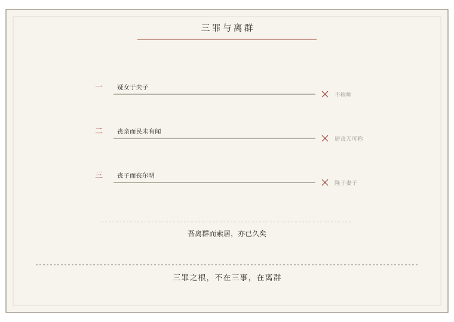

檀弓上 · 三·四十 · 第 243 课
子夏丧其子而丧其明。曾子吊之，曰：「吾闻之也：朋友丧明则哭之。」曾子哭，子夏亦哭，曰：「天乎！予之无罪也！」曾子怒曰：「商！女何无罪也？……而曰女何无罪与？」子夏投其杖而拜曰：「吾过矣！吾过矣！吾离群而索居，亦已久矣。」
说什么事：一个人哭子哭到失明，又怨天说无罪；他的朋友不慰他，反而数他三罪。
落在哪一层：礼，兼及礼意与朋友之义。
为何编在此位：上节论丧中之食，此节论丧之毁身。毁身者，哀之过也；哀过而自怨，则哀失其正。
【经】子夏喪其子而喪其明。曾子弔之，曰：「吾聞之也：朋友喪明則哭之。」曾子哭，子夏亦哭，曰：「天乎！予之無罪也！」曾子怒曰：「商！女何無罪也？吾與女事夫子於洙、泗之間，退而老於西河之上，使西河之民疑女於夫子，爾罪一也。喪爾親，使民未有聞焉，爾罪二也。喪爾子，喪爾明，爾罪三也。而曰女何無罪與？」子夏投其杖而拜曰：「吾過矣！吾過矣！吾離群而索居，亦已久矣。」
【注】明，目精。痛之。怨天罚无罪。言其有师也。洙、泗，鲁水名。西河，龙门至华阴之地。言其不称师也。言居亲丧无异称。言隆于妻子。谢之，且服罪也。群谓同门朋友也。索犹散也。
【疏】此一节论子夏恩隆于子之事。案《仲尼弟子传》云，子夏姓卜，名商，魏人也。哀丧其子而哭，丧失其明。曾子是子夏之友，故云「朋友丧明则哭之」。子夏丧子之时，曾子已吊，今为丧明更吊，故曾子先哭，子夏始哭。云「疑女于夫子」者，既不称其师，自为谈说，辨慧聪睿，绝异于人，使西河之民疑女道德与夫子相似。皇氏言，疑子夏是夫子之身；然子夏魏人，居在西河之上，姓卜名商，西河之民无容不识，而言是鲁国孔丘，不近人情，皇氏非也。
丧其明 注「明，目精」。哭子过哀而目损。
朋友丧明则哭之 礼有朋友之哭。曾子先哭，是行此礼。
予之无罪 怨天之辞。注「怨天罚无罪」。
商 子夏名。直呼其名，怒之甚。
疑女于夫子 使人疑你比于夫子。注「言其不称师也」。
未有闻焉 居亲丧无可称于民。
隆于妻子 注语。爱子过于常。
投其杖而拜 弃杖而拜，服罪之状。
离群而索居 注「群谓同门朋友也，索犹散也」。
子夏死了儿子，哭得失去了目力。曾子去吊他，说：「我听说：朋友失明，就当为他哭。」曾子哭，子夏也哭，说：「天啊！我没有罪过啊！」曾子发怒说：「商！你什么没有罪过？我和你同事夫子于洙、泗之间，退而老于西河之上，使西河之民疑你比于夫子，这是你的第一罪。你居亲之丧，使民没有可称道的，这是第二罪。你死了儿子，就哭坏了眼睛，这是第三罪。你还说没有罪过吗？」子夏丢下杖下拜说：「我错了！我错了！我离群独居，已经很久了。」
此节三层：一哭、一怒、一服。曾子之哭，是礼；曾子之怒，是义。子夏怨天，是把丧子之痛推给天；曾子数其三罪，是把这痛拉回自己。三罪之中，前二罪与丧子无涉，第三罪才是眼前事——此正是曾子之深：他要子夏明白，今日之失明，不是天罚，是三年以来一步步积成的。而子夏的答语只一句「吾离群而索居」，认的不是三事，是三事之根。
第一层 丧明之由 哭子而失明，是「毁」之实症。《曲礼》「毁瘠不形，视听不衰」，正为此设。礼不许毁身，非不爱其亲，是毁身则不能终丧，不能终丧则孝道绝。
第二层 朋友丧明则哭之 此礼不见于《丧服》，而曾子引「吾闻之也」，是礼之逸文。友之丧明，非丧其亲，而哭之者，哀其目之亡也。礼于朋友，有哭有吊，各有其节。
第三层 三罪之次 一罪在不称师而自大，二罪在居亲丧无可称，三罪在隆于妻子而毁其身。其次序由外而内、由名而实：先师道，次亲丧，终妻子。疏言「恩隆于子」，正指第三。
第四层 离群索居 此为全节之结，亦为三罪之根。群者同门朋友：在群则有人责之，独居则无人正之。曾子之怒，是群之责；子夏之服，是知离群之害。注「索犹散也」——散者，非独处之谓，是道之散。
与今日何干 一个人失了子女而失明，旁人只慰不问；曾子偏问「女何无罪」。真正的朋友不在丧时只说节哀，而在其自怨时敢数其罪。至于「离群索居」，更是今日独居者的通病：无人责，则过日积而不自觉。
| 左 | 右 |
|---|---|
| 丧其子而丧其明 | 毁身之实症 |
| 予之无罪也 | 怨天，推痛于外 |
| 疑女于夫子 | 罪一：不称师 |
| 丧尔亲，使民未有闻 | 罪二：居丧无可称 |
| 丧尔子，丧尔明 | 罪三：隆于妻子 |
| 投杖而拜 | 服罪 |
| 离群而索居 | 三罪之根 |
画一处简陋的居室，视点平。中央一位老者坐于席上（衣素、双目闭着、一手扶膝），身前一根木杖横倒在地上。左侧立着一位士人（衣略深、面色严峻、右手三指竖起作数状）。两人之间一盏灯，灯焰很低。墙角堆着几卷简，简上落尘。不写文字、不画人面细节。赭色只用在倒地的木杖与灯焰上。
